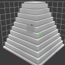

Scripting api
There is a console command (called xs) in voxedit and a command line parameter in voxconvert to execute lua scripts for generating voxels. This command expects the lua script filename (.lua can be omitted) and the additional arguments for the main() method.
If you are new to lua you can read more about it on lua-users.
voxedit
Calling
xs <script> help(in the script console) will print the supported arguments for the given script file in voxedit.
voxconvert
./vengi-voxconvert --script "<script> help" --scriptcolor 1 --input in.qb --output out.qb
--scriptcolordefines the color palette index that is given to the script as parameter.
By default the script files will be searched in a scripts folder next to where the binary is located and in the usual search paths (see configuration for more details). You can also give the full path to the script file.
There are two functions in each script. One is called arguments and one main. arguments returns a list of parameters for the main function. The default parameters for main are node, region and color. color is the palette index starting from 0.
Examples
Without parameters
function main(node, region, color)
local volume = node:volume()
local mins = region:mins()
local maxs = region:maxs()
for x = mins.x, maxs.x do
for y = mins.y, maxs.y do
for z = mins.z, maxs.z do
volume:setVoxel(x, y, z, color)
end
end
end
end
Execute this via console xs scriptfile
With one parameter
function arguments()
return {
{ name = 'n', desc = 'height level delta', type = 'int', default = '2' }
}
end
function main(node, region, color, n)
[...]
end
Execute this via console xs scriptfile 1 where 1 will be the value of n. Omitting the 1 will add the default value from the argument list.
Find the best palette match
function main(node, region, color)
-- find match (palette index) for red in the current palette (RGB value)
-- this value can be used in e.g. volume:setVoxel(x, y, z, match)
local match = node:palette():match(255, 0, 0)
[...]
end
This will find the best match in the currently used palette and return the index.
Arguments
Supported types are:
int:min,maxvalues are supported, toofloat:min,maxvalues are supported, tooenum:enumas a property specifies a list of string separated by,str: string inputcolorindex: a color index from current palette (clamped)bool:
The description field is just for the user interface of the script parameter list.
A default value can get set, too.
The order in the arguments table defines the order in which the arguments are passed over to the script.
SceneGraph
scenegraph lets you access different nodes or create new ones.
The functions are:
-
new(name, region[, visible]): Creates a new node with the givenname, the size and position according to theregionand an optionalvisibleparameter. -
get([nodeId]): Returns thenodefor the givennodeId- if thenodeIdis not given, it will return the current active node. Which by default is the node for the volume the script is currently executed for.
SceneGraphNode
-
name(): Returns the current name of the node. -
setName(string): Set the name of the node. -
palette(): Returns the current palette of the node. -
setPalette(palette): Change the palette -
volume(): Gives you access to the volume of the node.
Access these functions like this:
local scenegraphnode = [...]
local name = scenegraphnode:name()
Color
The node palette (node:palette()) has several methods to work with colors. E.g. to find a closest possible match for the given palette index.
The functions are:
-
color(paletteIndex): Pushes the vec4 of the color behind the palette index (0-255) as float values between0.0and1.0. -
colors(): Returns the palette RGBA colors as vec4 values. -
match(r, g, b): Returns the closest possible palette color match for the given RGB (0-255) color. The returned palette index is in the range0-255. This value can then be used for thesetVoxelmethod. -
similar(paletteindex, [coloramount]): Return a table with similar colors given by their palette index.
They are available as e.g. palette:color([...]), palette:match([...]) and so on.
Noise
The global noise supports a few noise generators:
-
noise2(v),noise3(v),noise4(v): Simplex noise. Uses the givenvec2,vec3orvec4and returns a float value between0.0and1.0. -
fBm2(v, octaves, lacunarity, gain),fBm3(v, octaves, lacunarity, gain),fBm4(v, octaves, lacunarity, gain): Simplex noise fractal brownian motion sum. Uses the givenvec2,vec3orvec4and returns a float value between0.0and1.0. -
ridgedMF2(v, offset, octaves, lacunarity, gain),ridgedMF3(v, offset, octaves, lacunarity, gain),ridgedMF4(v, offset, octaves, lacunarity, gain): Simplex ridged multi-fractal noise sum. Uses the givenvec2,vec3orvec4and returns a float value between0.0and1.0. -
swissTurbulence(vec2, offset, octaves, lacunarity, gain, warp): blog post -
voronoi(vec3, [frequency, seed, enableDistance]): Voronoi noise. -
worley2(v),worley3(v): Simplex cellular/worley noise. Uses the givenvec2orvec3and returns a float value between0.0and1.0.
They are available as e.g. noise.noise2([...]), noise.fBm3([...]) and so on.
Region
-
mins(): The lower boundary of the region (inclusive). -
maxs(): The upper boundary of the region (inclusive). -
size(): The size of the region in voxels (ivec3). -
setMins(mins): The lower boundary of the region - given asivec3. -
setMaxs(maxs): The upper boundary of the region - given asivec3. -
x(): The lower x boundary of the region. -
y(): The lower y boundary of the region. -
z(): The lower z bounary of the region. -
width(): The width of the region measured in voxels. -
height(): The height of the region measured in voxels. -
depth(): The depth of the region measured in voxels.
Access these functions like this:
local region = [...]
local mins = region:mins()
Volume
-
voxel(x, y, z): Returns the palette index of the voxel at the given position in the volume[0-255]. Or-1if there is no voxel. -
region(): Return the region of the volume. -
text(ttffont, text, [x], [y], [z], [size=16], [thickness=1], [spacing=0]): Renders the giventext.x,y, andzare the region lower boundary coordinates by default. -
fillHollow([color]): Tries to fill all hollows in the volume. -
importHeightmap(filename, [underground], [surface]): Imports the given image as heightmap into the current volume. Use theundergroundandsurfacevoxel colors for this (or pick some defaults if they were not specified). Also seeimportColoredHeightmapif you want to colorize your surface. -
importColoredHeightmap(filename, [underground]): Imports the given image as heightmap into the current volume. Use theundergroundvoxel colors for this and determine the surface colors from the RGB channel of the given image. Other than withimportHeightmapthe height is encoded in the alpha channel with this method. -
crop(): Crop the volume and remove empty spaces. -
mirrorAxis([axis]): Mirror along the given axis -yis default. -
rotateAxis([axis]): Rotate along the given axis -yis default. -
translate(x, [y, z]): Translates the region of the volume. Keep in mind that this is not supported by every output format. -
resize(x, [y, z, extendMins]): Resize the volume by the given sizes. IfextendsMinsistruethe region dimensions are also increased on the lower corner. -
setVoxel(x, y, z, color): Set the given color at the given coordinates in the volume.colormust be in the range[0-255]or-1to delete the voxel.
Access these functions like this:
local volume = [...]
local region = volume:region()
Vectors
Available vector types are vec2, vec3, vec4 and their integer types ivec2, ivec3, ivec4.
Access these functions like this:
local v1 = ivec3.new(1, 1, 1)
There are 3 possible components for this vector. You can also call ivec3.new(1) to fill all three values with a one. Or call it like this: ivec3.new(1, 2) to create a vector with the three components of 1, 2, 2.
Other
ygoing upwards.
You have access to the cvar and cmd lua bindings, too. This means that you can access any cvar value or execute any command like layeradd or layermerge to modify the whole scene.
cmd.execute("echo test")
var.int("cl_gamma")
To get a full list of commands and cvars use the console command cmdlist and cvarlist.
Available scripts
cover.lua
Generates a new voxel on top of others with the current selected color and the specified height.
xs cover.lua 1
grass.lua
Generate grass on top of voxels.
xs grass.lua
grid.lua
Generates a grid with given color, thickness and size.

xs grid.lua 1 1 5 5 5
noise.lua
Generates perlin noise with the frequency and amplitude as parameters with the current selected color.

xs noise.lua 0.3 1.0
pyramid.lua
Generates a pyramid with the current selected color and with each level being 3 voxels high.

xs pyramid.lua 3
thicken.lua
Thickens the voxel - take 1 voxel and convert to 8 voxels (creates a new node for the result).

xs thicken.lua 1
others
There are other scripts available in the repository.